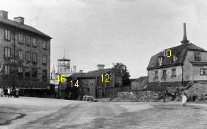
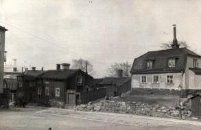
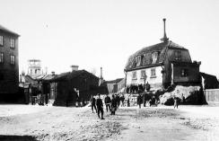
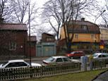

I Samfundet S:t Eriks årsbok 1915 redovisas samfundets utredning om »Gamla Stockholmshus på Södermalm« med
anledning av Anna Lindhagens motion. I utredningen står följande om huset vid nuvarande Ludvigsbergsgatan 10:
En annan 1700-talsbyggnad av betydligt blygsammare proportioner, ehuru icke mindre stockholmsk till karaktär och
lynne, är det lilla stenhuset i kv. Skinnarviksberget. Brett och lågt ligger det på bergsryggen med sitt snäva, tegeltäckta
mansardtak med plåtklädda kupfönster och små slätputsade väggar - utan varje annan prydnad än taklistens flärdfria
profilering. Huset är väl bevarat och, som sagt, synnerligen karakteristiskt för en försvinnande grupp småborgarhus av
sten från 1700-talet. Detta lilla hus är väl värt att bevara.
Huset fick sitt nuvarande utseende i samband med den genomgripande ombyggnad och upprustning som genomfördes i
slutet av 1960-talet.
Gårdshuset - ateljén - till Ludvigsbergsgatan l0 är en timmerstuga som varit bak- och bykstuga till Vinsta
1600-talsgård nära Hässelby. I samband med ett vägbygge revs den och uppfördes 1969 på sin nuvarande plats. En del av
virket var emellertid av så dålig kvalitet att det fick ersättas med annat timmer från en åldrig stuga i Småland.
År 1880 bor här 14 vuxna och 3 barn. De yrken som anges är ångbåtsbefälhavare, eldare, sjöman, linnestrykerska,
skrädderiarbetare, yngling och arbetskarl.
År 1910 är invånarna färre: 5 vuxna och 1 barn. Här bor nu en fd schaktmästare, två fd sjömän som nu är filare och en
sömmerska.
År 1940 bor 4 vuxna i huset, inga barn. Titlarna är f strykerska och hårfrisörska.
År 1971 finns här endast 2 vuxna, eventuella barn redovisas inte. Det är en direktör och en skulptris.
De nuvarande husen på Ludvigsbergsgatan 12 försäkrades 1757 och uppfördes troligen några decennier tidigare.
Gårdshuset - ateljén - är i princip två hus som är sammanbyggda med ett mellanparti.
Det nuvarande huset, Ludvigsbergsgatan 16, i hörnet mot Duvogränd uppfördes i ett plan före 1753. Vindsvåningen är påbyggd före 1778.
Huset har en planindelning som återfinns såväl på landsbygden som i Stockholm. De båda enrumsstugorna är
sammanbyggda med en förstuga, som senare delades i en mindre förstuga och en liten kammare.
|
|





|
{kind=link}
{kind=link}